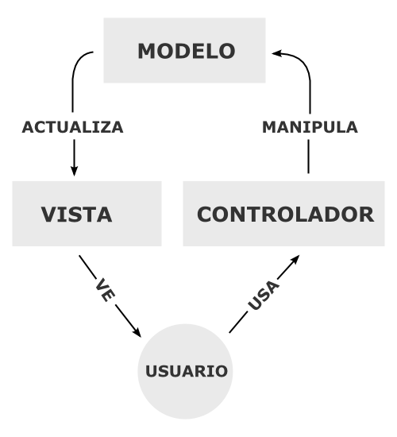
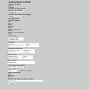
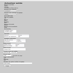
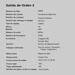
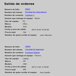
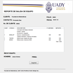

Diseño
Información de la Versión
| Proyecto: | Sistema de Control de Mantenimiento de Equipo de Cómputo |
|---|---|
| Número Interno de la Versión: | 0.1.0 |
| Documentos Relacionados: |
Introducción
En este documento tenemos condensados diagramas de los diseños
hechos para el sistema, se inicia con el diagrama estructural de la
base de datos, el diseño de comportamiento el cual esta descrito en los
casos de uso, la organización del código fuente, el diseño de las
pantallas del usuario, y los mecanismos de seguridad aplicados en el
sistema.
Diseño Estructural
El diseño estructural de la base de datos se muestra en el diagrama Entidad-Relación, en el cual se describen las tablas de la base de datos y las relaciones entre ellas en la siguiente imagen.
{kind=link}
Diseño de Comportamiento
Diagramas UML
- Gestión de usuarios
- Gestión de equipos
- Gestión de clientes
- Gestión de servicios
- C-13
Administración de tipo de servicio
- C-14
Administración de servicios
- C-15 Administración de trabajos
- Gestión de refacciones
- C-16 Administración de estados de refacción
- C-17 Administración de proveedores
- C-18 Administración de refacciones
- Gestión de ordenes
- C-19 Entrada de equipo
- C-20 Salida de equipo
{kind=link}
{kind=link}
{kind=link}
{kind=link}
{kind=link}
{kind=link}
{kind=link}
{kind=link}
{kind=link}
{kind=link}
{kind=link}
{kind=link}
{kind=link}
{kind=link}
{kind=link}
Arquitectura
La arquitectura utilizada para esta aplicación es una arquitectura cliente-servidor basada en la Web llamada MVC (Modelo-Vista-Controlador).
La arquitectura MVC es un patrón de arquitectura de software que separa los datos y la lógica de negocio de una aplicación de la interfaz de usuario y el módulo encargado de gestionar los eventos y las comunicaciones. Para ello MVC propone la construcción de tres componentes distintos que son el modelo, la vista y el controlador, es decir, por un lado define componentes para la representación de la información, y por otro lado para la interacción del usuario. Este patrón de arquitectura de software se basa en las ideas de reutilización de código y la separación de conceptos, características que buscan facilitar la tarea de desarrollo de aplicaciones y su posterior mantenimiento.

Para agilizar el desarrollo, se utiliza el framework Yii de código libre, el cual implementa la arquitectura MVC de la siguiente forma:

Teniendo el siguiente flujo de trabajo:

Organización de Código Fuente
| Ruta | Descripción |
|---|---|
| /assets |
Scripts y hojas de estilo utilizados por los componentes base del framework Yii y generados autormáticamente por el mismo framework. |
| /css | Hojas de estilo de la aplicación Web |
| /images | Imágenes utilizadas en la aplicación Web |
| /protected | Directorio base de la aplicación Web. Este contiene los modelos, vistas, controladores, módulos, componentes y configuraciones. |
| /themes |
Contiene temas para personalizar la aplicación |
| /index.php | Es el script de entrada de cualquier petición hacia la aplicación. Este se encarga de inicializar los componentes requeridos para responder a la solicitud del usuario. |
Interfaz de Usuario
| Título de la Interfaz de Usuario |
Imagen de la Interfaz de Usuario |
Casos de Uso Relacionados |
|---|---|---|
| Crear salida |
 |
CU-115: Crear salida |
| Actualizar salida |
 | CU-116: Actualizar salida |
| Visualizar salidas |
 |
CU-119: Visualizar salida |
| Listar salidas |
 |
CU-120:
Listar salida |
| Imprimir salidas |
 |
CU-122:
Imprimir salida |
{kind=link}
{kind=link}
{kind=link}
{kind=link}
{kind=link}
Mecanismos de Seguridad
- Utilización de consultas preparadas para evitar inyección SQL.
- Sanitización de la salida de la información de la base de datos para evitar Cross-Site Scripting.
- Autenticación de usuarios y contraseñas.
- Encriptación de contraseña en base de datos.
- Autorización con control de acceso basado en roles (RBAC).
- Validación de datos de entrada en URL.
- Validación de datos de entrada en Formularios en el cliente.
- Validación de datos de entrada en Formularios en el servidor.
- Uso de llaves foraneas.
- Eliminación de registros lógica y no física.
- Manejo de errores y bitácora de registro.